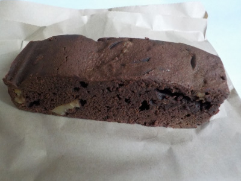
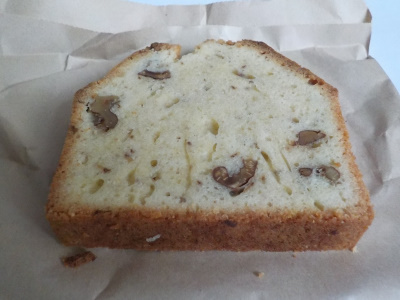

薪窯パン allumeに初めて行きました。
更新日 : 2019/11/03
靴を脱いでスリッパに履き替えて買い物するパン屋さん。
パン屋さんだけど、ショーケースに入っている焼き菓子の方が目立ってます。

ブラウニー

↑くるみのパウンドケーキ
喫茶スペースもありました。なんとなく喫茶店っぽいお店でした。
島根県雲南市木次町寺領1036-1
更新日 : 2019/11/03
靴を脱いでスリッパに履き替えて買い物するパン屋さん。
パン屋さんだけど、ショーケースに入っている焼き菓子の方が目立ってます。

ブラウニー

↑くるみのパウンドケーキ
喫茶スペースもありました。なんとなく喫茶店っぽいお店でした。